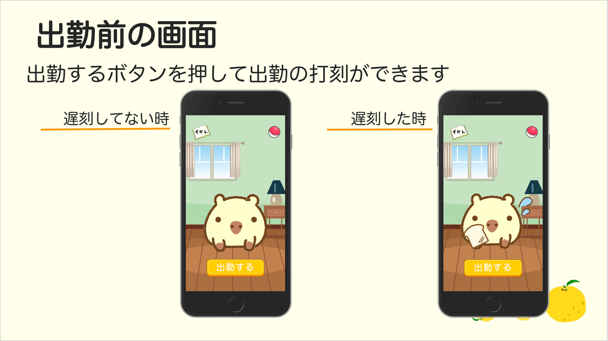
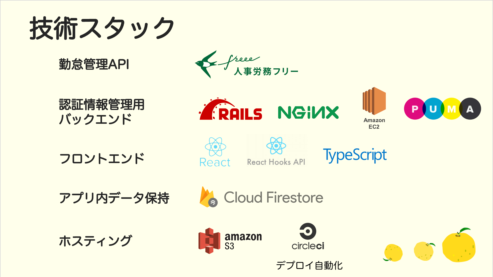

概要
freeeAPIを使用して作成した最高の勤怠管理システム、コレクションゲーム型勤怠管理アプリ
期間
2019年8月19日〜8月29日 (9日間)
作品紹介
コンテンツのDEMOと打刻のDEMOに分けています
※作品持ち出し禁止のため動画です
アプリ上で出勤したら勤怠管理画面にリアルタイムで反映されています。
使用ツール
illustrator
html
css
React.js
TypeScript
ruby.on.rails
製作過程
背景
勤怠管理ツールの中で、ICカードや生体認証はデバイスに依存してしまい複数人同時に処理できないことと増やすとコストがかかることがデメリットとしてあります。
また、既存の勤怠アプリでは機械的な作業なので続かなく、打刻忘れが多いことがあります。
目的
そこで、機械的な打刻を無くし毎日飽きずに打刻することを目的としました。
毎日飽きず勤怠を入力するために、せっかくなら楽しく習慣化できるほうがいいと思い、コレクションゲームを提案します。
UIデザイン

技術説明
